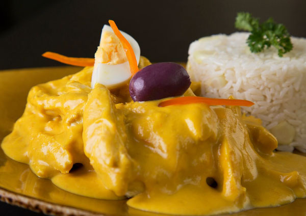
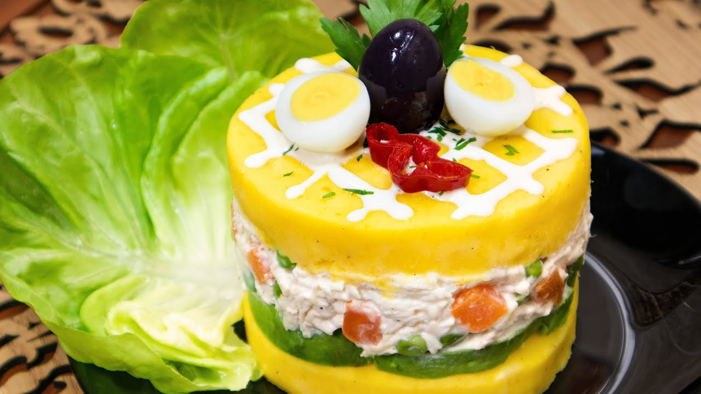

Ceviche
Clásico plato de pescado marinado con limón y ají.
Ver RecetaSabores peruanos que conquistan el corazón




Descubre recetas tradicionales y modernas de Perú, con pasos claros y fotografías para que disfrutes cocinando en casa.
Clásico plato de pescado marinado con limón y ají.
Ver RecetaSuave guiso de pollo con salsa cremosa de ají amarillo.
Ver Receta
Delicioso salteado de carne, verduras y papas fritas.
Ver RecetaPuré de papa amarilla relleno con pollo o atún.
Ver Receta
Tradicional plato de arroz con especias envuelto en hoja de bijao.
Ver Receta